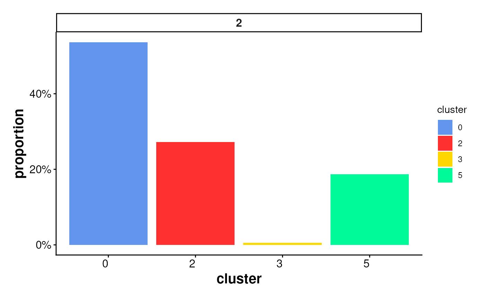
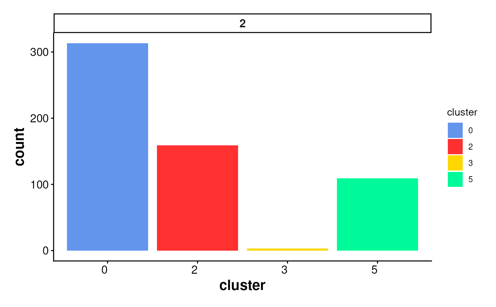

Bar plot of cluster statistics for cells inside boundaries or ring regions
Source:R/PlotStats.R
PlotStatsBar.RdCreates a bar plot to visualize the distribution of cells inside
spatial regions (e.g., boundaries or rings),
either as raw counts or proportions per cluster.
The plot is faceted by region_id to show statistics across
multiple spatial subregions.
Usage
PlotStatsBar(
cell_stats = NULL,
stat_column = c("proportion", "count"),
colors = my_colors_15,
angle_x_label = 0,
theme_ggplot = my_theme_ggplot()
)Arguments
- cell_stats
A data frame containing summarized cell statistics, typically the output from
StatsCellsInside(). Must include columnsregion_id,cluster, and the specifiedstat_column.- stat_column
Character. Column name in
cell_statsto use for the y-axis. Options are"count"(number of cells) or"proportion"(relative fraction per region).- colors
A vector of cluster colors. Default uses
my_colors_15.- angle_x_label
Numeric angle (in degrees) to rotate the x-axis labels. Useful for improving label readability in faceted or dense plots. Default is 0 (no rotation).
- theme_ggplot
A ggplot2 theme object. Default is
my_theme_ggplot().
Examples
coords <- readRDS(system.file("extdata", "MouseBrainCoords.rds",
package = "SpNeigh"
))
boundary_points <- GetBoundary(
data = coords, one_cluster = 2,
eps = 120, minPts = 10
)
cells_inside <- GetCellsInside(data = coords, boundary = boundary_points)
stats_cells <- StatsCellsInside(cells_inside)
PlotStatsBar(stats_cells, stat_column = "proportion")

PlotStatsBar(stats_cells, stat_column = "count")
